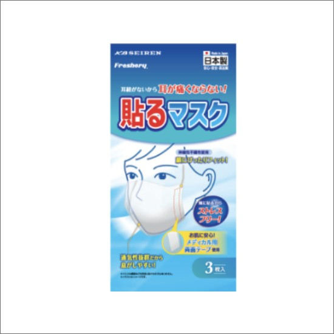
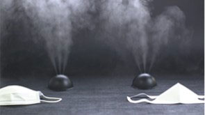
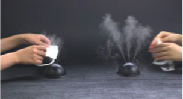
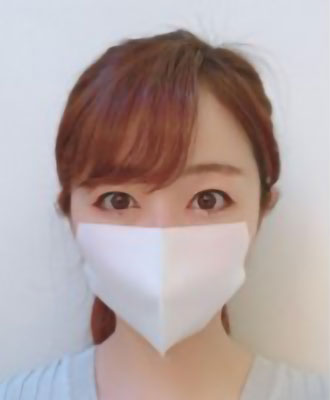
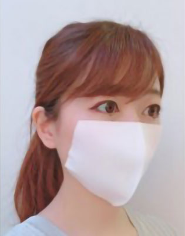
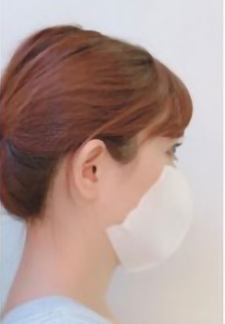

■「貼るマスク」の7つのコンセプト


【サーモグラフィ測定によるマスク内温度比較実験】
マスクを着用して1階から3階まで階段を駆け足で昇り降りした直後の呼吸状態を確認
吸い込み時は温度が下がり、吐き出し時には温度が上がる。その差を測定。
温度差が大きい⇒内気と外気をしっかりと交換できている⇒長時間着用してもマスク内温度が上昇しにくくムレにくい>



布マスクに近い肌触りでありながら、本来の不織布特有のフィルター性能を保有。
花粉ろ過効率は99%以上を実現。
※（一財）カケンテストセンター調べ 花粉粒子の捕集効率テスト
 Contact
Contact